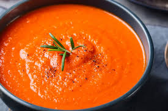

Josine's Tomatensoep
Home Page

Deze soepele tomatensoep boordevol met vitamines als lunch gerecht zorgt voor een echt geniet momentje in het midden van je dag.
Met dit basisrecept kun je goed varieren door ook eens een wortel, courgette of aubergine toe te voegen.
Ingredienten
- 2 blikken tomatenblokjes
- 3 zoete puntparika's
- 1 ui
- 2 blokjes groenten bouillon
- 2 teentjes knoflook
- Italiaanse kruiden
- 2 sneetjes brood
- Snij de paprika in stukjes en rooster ze voor 8 minuten
- Fruit de ui in een pan met wat olie.
- Voeg de geroosterde paprika's en tomatenblokjes toe aan de gebakken ui en laat dit sudderen voor 5 minuten
- Maak 1,5L bouillon met kokend water en voeg dit toe in de pan met ui en kipstukjes.
- Plet de knoflook met de zijkant van een mes en voeg deze samen met de kruiden toe.
- Laat alles voor 15 minuutjes zachtjes koken
- Pureer alles tot een soepel geheel
- Rooster de sneetjes brood
- Genieten maar!